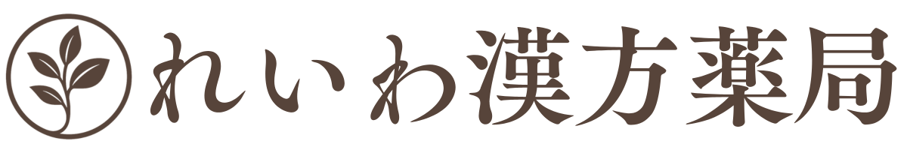

オンラインショップ
漢方ブログ
漢方相談
体質診断チェック
当てはまる項目にチェックを入れてください。
すべての項目に答える必要はありませんが、できるだけ近いものを選んでいただくと体質判定の精度が上がります。
感情・眠り
イライラしやすい
怒りっぽい
不安になりやすい
緊張しやすい
ため息が多い／胸がつかえる
夢が多い
眠りが浅い
日中に眠くなりやすい
暑くて寝つけない
体の傾向
寒がり／手足が冷える
顔がのぼせやすい
上半身が熱く下半身が冷える
むくみやすい
体が重だるい
汗をかきやすい
少し動くと疲れやすい
顔色が悪い／血の気が少ない
息切れしやすい
体の状態
肩や首がこりやすい
痛みが同じ場所にとどまる
手足がしびれる
乾燥肌でかさつく
シミ・くすみが気になる
ニキビ／吹き出物が出やすい
炎症や赤みが出やすい
ほてりを感じやすい
夜に寝汗をかく
舌・口・目
舌が白っぽい
舌が赤い
舌に歯の跡がつく
舌苔が白く厚い
舌苔が黄色く厚い
舌が乾き／ひび割れる
口が渇きやすい
目が疲れやすい
目が充血しやすい
消化・便通・食欲
食欲が落ちやすい
食後に眠くなる
お腹が張りやすい／胃もたれ
便が柔らかい／水っぽい
下痢しやすい
便秘しやすい
下痢と便秘をくり返す
月経（該当者のみ）
月経周期が短い（25日以内）
月経周期が長い（35日以上）
月経周期が不安定
経血量が多い
経血量が少ない
経血が鮮やかな赤
経血が暗い／黒っぽい・塊がある
月経痛が強い
温めると痛みがやわらぐ
冷えると痛みが強くなる
月経前に胸が張る
月経前にイライラしやすい
月経前にむくみが出る
体質を診断する
チェック内容は送信されず、このページ内だけで判定されます。